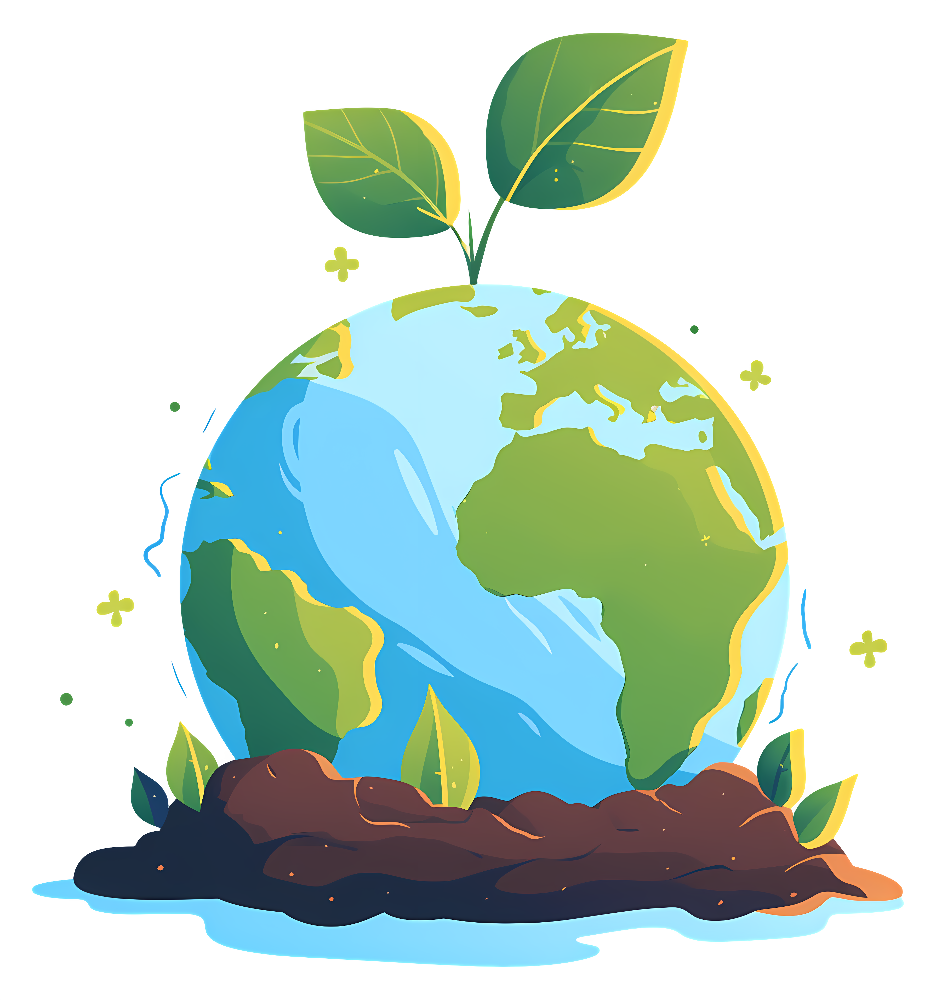

Welcome to EcoChic.
The way we live impacts the world around us. From the clothes we wear to
the food we eat and the energy we use, every choice we make leaves a footprint
on the planet. But here’s the good news: small, conscious changes can lead to
a massive difference. That’s why we created EcoChic—a platform dedicated to making
sustainable living easy, practical, and stylish.
Why Does Sustainability Matter?
The environmental problems are at their increase on our dear planet.
Our landfills are overflowing with garbage; our oceans are polluted
with plastic, the reputation of industries continues to deplete natural
resources with high rate. The fashion industry alone is producing as
high as 92 million tons waste every year, and on the average a family
wastes almost 30% of the food that they buy. The effects of climate change
are accelerating, and this will certainly be inherited to the future
generations in a world that has no resemblance to life as we know it.
However, it is not only about problems; there are also solutions.
Sustainability is a process of making better choices in our lives.
There is nothing like perfect sustainability. It means going as far as
possible—whether that means using reusable products, reducing water
consumption, using ethical fashion, or simply learning more about how
to protect the environment-every little helps.
